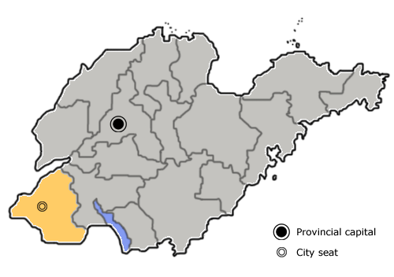

Jinan, referred to as "Ji", also known as "Quancheng", is the capital of Shandong province, one of the 15 sub-provincial cities in China, the central city in the south of the Bohai Sea region, and the political, cultural, educational, economic, transportation and science and technology center of Shandong Province.
Heze, referred to as Heze, cao Zhou in ancient times, is a prefecture-level city under the jurisdiction of Shandong Province of the People's Republic of China, located in the southwest of Shandong Province.
This is a standard paragraph.